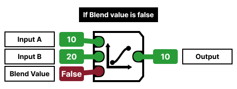
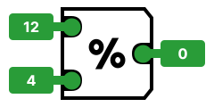
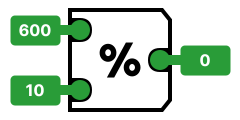
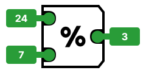
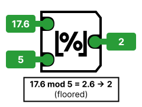

Math Gates¶
These gates are based on real-world mathematics. You will need ample knowledge to use these gates itself, so it is recommended you recap or read on real-world mathematics fundamentals.
Add¶
This gate outputs the sum of both inputs (\(\text{Input A} + \text{Input B} = \text{Output}\)).
This gate will add or subtract based on Input B.
- If Input B is positive, the gate will do addition as normal.
\(A + B = \text{Output}\) - If Input B is negative, the gate will do subtraction instead.
\((A + -B) \rightarrow (A - B) = \text{Output}\)
These rules do not apply to Input A. Input A can either be positive or negative without any effect to the functionality.
Subtract¶

This gate outputs the product of subtracting Input A with Input B (\(\text{Input A} - \text{Input B} = \text{Output}\)).
This gate will subtract or add based on Input B.
- If Input B is positive, the gate will do subtraction as normal.
\(A - B = \text{Output}\) - If Input B is negative, the gate will do addition instead.
\((A - -B) \rightarrow (A + B) = \text{Output}\)
These rules do not apply to Input A. Input A can either be positive or negative without any effect to the functionality.
Multiply¶

This gate outputs the product of multiplying both inputs (\(\text{Input A} \times \text{Input B} = \text{Output}\)).
- If the inputs are both positive or negative, the output always comes out as positive.
- If either individual input has a negative value and the other has a positive value, the output always comes out as negative.
Using Multiply for division¶
You can insert float values containing decimals to multiply with other values, which may prove useful in scenarios where using Multiply gates over Divide gates are preferred.
Using Multiply for exponents¶
For the power of 2, you need to connect the same wire containing the value to both inputs of the Multiply gate.
Shown in this example is \(4^2\), alternatively read as 4 to the power of 2.
You will need to chain 2 Multiply gates or more to handle operations involving exponents that are above 2.
This example achieves \(8^2\), \(8^3\) and \(8^4\), all in one circuit.
Divide¶

This gate outputs the product of dividing both inputs (\(\text{Input A} \div \text{Input B} = \text{Output}\)). Division can also be represented by using fractions.
- If the inputs are both positive or negative, the output always comes out as positive.
- If either individual input has a negative value and the other has a positive value, the output always comes out as negative.
Using Divide for multiplication¶
You can insert float values containing decimals to divide with other values, which may prove useful in scenarios where using Divide gates over Multiply gates are preferred.

Blend¶
To simplify this down with a brief explanation: this gate is commonly used to:
- Select a set of numbers based on an Float value.
- Output two numbers depending on a Boolean value.
This gate is based on linear interpolation (alternatively called a Lerp in computer terms).
Formula¶
We will show the linear original interpolation formula:
This gate uses the same formula, but swaps out the variables for the inputs' values:
To cut down on redundancy, we will simplify the formula down to this:
Examples¶
A Boolean value can only either be 0 (false) or 1 (true), which makes it a perfect candidate if you just want to use the Blend gate to make a switch output between two custom values.
Given Input A is 10 and Input B is 20:
- If Blend Value is False,
the Blend gate outputs 10.

- If Blend Value is True,
the Blend gate outputs 20.

Since this warrants the use of the equation above, we will use it to demonstrate how the Blend Gate outputs a value.

Given input A is 50 and input B is 80, and the blend value is 0.37:
First, we subtract 80 (\(\text{B}\)) by 50 (\(\text{A}\)). 30 is the result.
Multiply the blend value with the result of \((\text{B}-\text{A})\). The result is 11.1.
Finally, get the sum of Input A and the result of \((\text{Blend Value})(\text{B}-\text{A})\).
You have the gate's final output.
Ceil¶
This gate rounds an float value up to the higher integer equivalent.
Two examples of Ceil:
- If the input is 5.06, it is rounded up to the integer of 6.
- If the input is 8.83, it is rounded up to the integer of 9.

Floor¶
This gate rounds an float value down to the lower integer equivalent.
Two examples of Floor:
- If the input is 2.46, it is rounded down to the integer of 2.
- If the input is 3.71, it is rounded down to the integer of 3.

Modulo¶

This gate extracts the remainder of a division equation.
If your numbers are evenly subtractable, this gate will output zero. For example:
- \(12 \div 4 = 3\), leaving no remainder.

- \(600 \div 10 = 60\) leaving no remainder.

On the other hand, here's some examples of division that output non-zero values with Modulo:
- \(24 \div 7 = 4\) with a remainder of \(3\).

- \(95 \div 15 = 6\) with a remainder of \(5\).

Modulo (Floor)¶

Does the same as the Modulo gate but floors the value down to an integer. Described as the equivalent of Python's modulo.
- \(17.6 \div 5 = 3\) with a remainder of \(2.6\),
floored down to \(2\).
